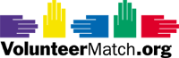
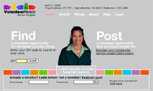
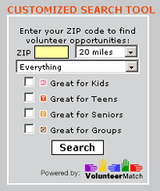
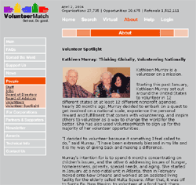

Read about how registering with MissionFish can help you fundraise for
your favorite causes through charity auctions on eBay, The World's Online Marketplace®.
ISoldIt offers a turn key solution to sell
items for fundraisers on eBay through its network of retail locations. Read About how they can make your auction
fundraising a breeze.
VolunteerMatch connects people with
causes that need their help. Read This
Story about how you can use their service to find a volunteer or volunteer opportunity.
Post An Opportunity, or search for a volunteer opportunity
in your area by entering your zip code below.
Featured Resource:
VolunteerMatch: Igniting Fires & Fanning Flames of Volunteerism

VolunteerMatch: Igniting Fires & Fanning Flames of Volunteerism
Their
formal Mission Statement sums it up: VolunteerMatch is dedicated to
helping everyone find a great place to volunteer. Their official slogan
puts it even more succinctly: Get Out. Do Good. Need we, or they, say
more? Probably not, but brevity is not our strongest suit. Allow us
to sing the praises of VolunteerMatch.
A familiar
tune from the roots of Americana repeats the refrain: It only takes
a spark to get a fire going, and soon all those around will warm up
to its glowing. VolunteerMatch provides the spark. Willing volunteers,
worthy nonprofit organizations, and corporate partners pour on the fuel
for a bonfire of satisfying opportunities; their cooperative efforts
result in a warm altruistic and philanthropic glow spreading through
communities across America.
The successful approach by VolunteerMatch is threefold. They provide Community Service Organizations with a highly effective volunteer recruitment tool. Many small to medium nonprofit groups benefit from VolunteerMatch's powerful presence within the online community of giving. Individual volunteers receive instant access to a wealth of opportunities linked to their geographic location, age range, passion for particular causes, and hours of availability for service. VolunteerMatch 's corporate services provides over 20 companies with a far more efficient method of maximizing corporate volunteering efforts.
“VolunteerMatch is designed to make it easier than ever for anyone to find a rewarding way to volunteer,” said Jason Willett, director of communications for VolunteerMatch. “We succeed because our community is made up of a network of nonprofit, volunteer and business leaders committed to civic engagement.”
This triple
threat to apathy encourages participation by all sectors of the philanthropic
community: Volunteers, Community Service Groups, Corporate Partnerships.
The simplicity of the idea and the development of powerful software
have been the keys to VolunteerMatch's success. Their website is amazingly
easy to navigate. It includes an evolving list of elements used to narrow
a potential volunteers search for opportunities to work with
organizations. This criteria leads to potentially satisfying volunteer
experiences and promotes ongoing and growing levels of volunteer participation.
The result: individuals and organizations blazing with passion for service
to others.
Community
Service Organizations are encouraged to register with VolunteerMatch.
They are rewarded for registration with services to assist with the
recruitment and management of volunteers. All tax-exempt organizations
are eligible to register including: social, civic, charitable, educational,
governmental, and political groups. This growing community is composed
of over 25,000 organizations representing more than 30,000 volunteer
opportunities.
What nonprofit organizations are saying about VolunteerMatch:
"Thanks
again for making your site available to volunteers. Our little Village
Temple Soup Kitchen in New York City, which feeds 150 needy people each
week, has had over 1000 page views in the last 9 months and over 100
new volunteers since I listed our opportunity on the VolunteerMatch
site. It has really made a difference."
J. Dean Chavooshian, Chairman, Village Temple Soup Kitchen
"Thanks
to VolunteerMatch, we have had an overwhelming response to our volunteer
opportunities. In fact, we have had so many volunteers that we have
been able to create extra volunteer opportunities! Thanks to VolunteerMatch,
our program is expanding. And best of all, the service is so useful
that I can keep up!"
Bev Kay, Board Member, The Holiday Project
Many individuals feel a burning desire to serve others and discover difficulties finding a fulfilling opportunity. VolunteerMatch makes is as easy as the click of a computer mouse. After logging onto their website, visitors are prompted to enter their ZIP code. Further information results in a wide range of volunteer opportunities located within most communities.
The criteria used to assist with matching volunteers to opportunities and organizations includes: personal causes of interest, professional and technical skills, scheduling and availability, and geographic location. Frustrations involved with securing meaningful volunteer appointments melt away as a wealth of options blaze to life through clicking cursors. To date, VolunteerMatch, has provided more than one and a half million volunteer referrals.
What volunteers say about VolunteerMatch:
"I
just want to thank you for your wonderful service. I found the perfect
opportunity 2 blocks from home! I will be a general office aid for the
Bronx YMCA for 2 days a week. I would never have found it without your
service. Again, thank you very, very much."
Emma Padilla, Volunteer, The Bronx YMCA of Greater New York
"I
found VolunteerMatch and thought it was very helpful. It's a much easier
way to find a place to volunteer."
Sophia Wu, 8th Grade Volunteer, Canyon Hills Jr. High,
Chino Hills, California
"I
visited your site earlier in the year, and contacted our Zoo to become
a volunteer. I just completed Docent training there and am having the
best time. At the Zoo, I feel as if I'm making a difference. I'm helping
animals and teaching others to respect all living creatures, even those
normally unloved like reptiles and amphibians."
Barbara Mathieson, Volunteer, Nashville Zoo
A customized, co-branded version of VolunteerMatch , "VolunteerMatch Corporate," is licensed to corporations, making it easier for employees to volunteer. Corporate partners and participating companies read like a who's who list of Fortune 500 and/or Blue Chip corporations. They include: Nike, Dell, Microsoft, AT & T Wireless, Verizon, Target, Coca-Cola, Charles Schwab, Lexmark, Merrill Lynch, Lucent Technologies, and Gap, Inc., among others.
Numerous studies have demonstrated an increase in job satisfaction and employee loyalty when opportunities to give to others are made available. Such volunteer opportunities include assistance with special events, ongoing volunteer positions, and technical/professional services offered on a pro-bono basis. Participating companies are well aware of the benefits derived from a partnership with VolunteerMatch Corporate. They're staunch supporters and consistent benefactors of this valuable service; lighting fires under uninitiated companies is a pressing goal. VolunteerMatch strives to help companies realize the potential benefits of a work environment that promotes giving to others.
What VolunteerMatch Corporate Clients have to say:
"VolunteerMatch
Corporate is an efficient and fun way that enables our employees to
'expand their playing field' and get involved in the community. Compared
to traditional methods of gathering and communicating volunteer information,
VolunteerMatch Corporate has made opportunities for community service
more accessible to employees. It also provides us with a convenient
way to track and recognize employees for their efforts."
Gina A. Warren, Director of Global Community Affairs, Nike
"The
Coca-Cola Company and its employees are committed to bringing value
to communities nationwide through volunteerism and community service
activities. By providing our employees access to VolunteerMatch, we
give them direct, fast and easy connections to organizations throughout
the country that need volunteer support. At The Coca-Cola Company, VolunteerMatch
has proven a valuable resource for our employees and a great tool for
Reaching Out, our Company's employee volunteer program."
Dominique V. Love, Manager, Corporate Contributions, The Coca-Cola
Company
Fundraisers.Com is not alone in singing around VolunteerMatch's community campfire. Their user-friendly website has won Webby Awards and honors have been received from the Smithsonian Institution and MIT. The Wall Street Journal, The New York Times, The Washington Post, USA Today, Forbes, ABC News, CBS, MSNBC and the Oprah Winfrey Show have melted proverbial s'mores around the flames ignited by VolunteerMatch's exemplary services. This choir of admirers spreads the warmth and encourages everyone to "pass it on."
-- DeWayne Lumpkin
Read
More About:
www.volunteermatch.com
Poker Cares is a network of poker and fundraising experts who care to make a difference in the community. Find out how you can organize a charity poker tournament event for your next fundraiser. See the FundRaisers.com... Poker Resources Page.
Poker Fundraiser For Diabetes
Read about how Pulver Enterprises hosted a successful Texas Hold'em Tournament to benefit Diabetes causes.

Want to find out about Charity Poker Tournaments or let us know about yours? We want to hear from you. Experts wanted! See the Fundraisers.com...
CHARITY POKER BLOG
Get your nonprofit's message out to the world via the world's largest online video community. Sign up today for a dedicated YouTube Nonprofit Channel.
Read about all the valuable technology articles that TechSoup offers to help your organization effectively plan and use technology.
Thanks for visiting FundRaisers.com! Share it with other people for their fundraising campaigns.